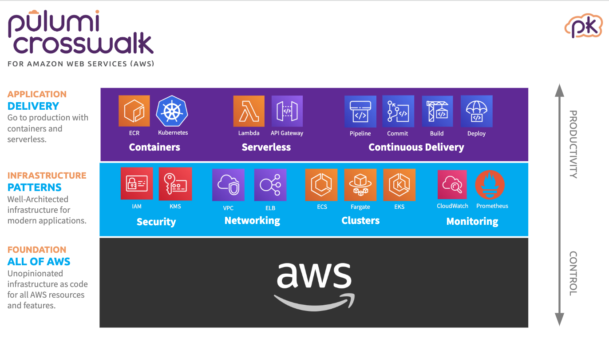

Introducing Pulumi Crosswalk for AWS: The Easiest Way to AWS

Amazon Web Services provides an incredible platform for developers to build cloud-native applications, and is used by millions of customers of all sizes. The building block services that AWS offers enable teams to offload undifferentiated heavy-lifting to AWS. To maximally benefit from these services though, cloud engineering teams must learn how to compose all of these building blocks together to build and deliver their own applications. Today, this is still too hard. Getting from your laptop to a production-ready AWS deployment frequently takes days or weeks instead of minutes or hours. And AWS building block services frequently leave you to re-implement (and re-discover) best-practices instead of providing these as smart defaults.
Pulumi Crosswalk for AWS is a new open source library of infrastructure-as-code components that make it easier to get from zero to production on AWS, easier to adopt AWS best practices by default, and easier to evolve your AWS infrastructure as your application needs mature.

Crosswalk for AWS offers higher-level components for a wide range of the AWS platform - from serverless (Lambda, API Gateway and more) to containers (ECS, Fargate) to Kubernetes (EKS) and across networking (VPCs, SecurityGroups), monitoring (Cloudwatch Dashboards and Alarms) and load balancing (ALB and NLB). Because Crosswalk builds on the primitive building blocks of the AWS platform, you can use 100% of what AWS offers, and can seamlessly move between high-level components and low-level platform primitives, mixing-and-matching as needed.
In some of these domains, there have been successful tools that have
helped developers more easily work with one specific aspect of AWS -
Serverless Framework for serverless,
Docker Compose for ECS,
eksctl for EKS. But these
tools have traditionally been limited to one specific kind of compute,
limiting what users can accomplish, fragmenting development of complete
cloud solutions, and leading to sharp cliffs when application needs
evolve. Crosswalk for AWS offers the same kind of simpler and more
productive developer interface as these tools, but applied uniformly
across the entire AWS platform. Simple things are simple, and
arbitrarily complex things are possible.
Whether you are starting a new SaaS project at a startup, migrating an enterprise application to cloud-native infrastructure, or delivering a new service as part of an established cloud application, Crosswalk for AWS provides the easiest way to get from zero to production, and to then evolve with your projects’ needs. You can get started with Crosswalk for AWS today!
Note: Crosswalk for AWS projects are authored using the Pulumi infrastructure-as-code tools. Pulumi allows you to define your infrastructure using code. As your infrastructure code evolves, Pulumi makes the minimal required changes to your cloud resources, ensuring that your infrastructure is updated without downtime (if possible).
From Zero to Production And Beyond with Crosswalk for AWS
Serverless (Lambda, API Gateway)
When getting started with a new cloud project, the starting point is often just serving a simple API on the internet. With just a few lines of code and tens of seconds to deploy, Crosswalk for AWS gives us our API.
import * as awsx from "@pulumi/awsx";
const api = new awsx.apigateway.API("api", {
routes: [{
method: "GET",
path: "/",
eventHandler: async (ev, ctx) => {
return {
statusCode: 200,
body: JSON.stringify(ev),
};
}
}],
})
export const endpoint = api.url;By building on top of great AWS building blocks like Lambda, API Gateway, IAM and more, we avoid needing to worry about infrastructure, pay nearly zero fixed costs, and gain the ability to iterate quickly. With just a few more lines of code, we can wire up to our own domain, add authorization, provision a database, or chain together a more complex event-driven application.
Containers (ECS, Fargate)
As our needs grow, we might find we need to deploy containers - either custom applications or existing Docker images. Again, just a few lines of code gets our container running in production in AWS.
import * as awsx from "@pulumi/awsx";
// Create the cluster
const cluster = new awsx.ecs.Cluster("cluster");
// Configure a Load Balancer
const alb = new awsx.elasticloadbalancingv2.ApplicationLoadBalancer("lb", {
securityGroups: cluster.securityGroups,
});
const web = alb.createListener("web", { port: 80, external: true });
// Define the scaled-out Fargate service
const appService = new awsx.ecs.FargateService("app-svc", {
cluster,
taskDefinitionArgs: {
container: {
image: awsx.ecs.Image.fromPath("app", "./app"),
portMappings: [ web ],
},
},
desiredCount: 5,
});
export const url = web.endpoint.hostname;Using ECS, Fargate, ECR and ELB, we get a robust production-ready container deployment - horizontally scaled out, load-balanced, and integrated with a private image repository. With just a few more lines of code, we can add autoscaling, customize our ECS cluster, or wire through advanced container configuration (volumes, environment variables, and more).
Networking (VPC)
To adopt best practices security posture, we may want to move our cluster into a custom VPC, and run our containers in private subnets. We can define and configure our VPC, and then redeploy our containers into this new VPC with ease:
import * as awsx from "@pulumi/awsx";
const vpc = new awsx.ec2.Vpc("vpc", {
numberOfAvailabilityZones: 3,
});
const cluster = new awsx.ecs.Cluster("cluster", {
vpc: vpc,
});
// ... same as before ...The Vpc component builds on best-practices Virtual Private Cloud
design patterns based on AWS guidance and documentation.
By building in simple defaults for routing, subnet structure, NATs and
multi-AZ you can get started quickly without having to re-discover these
best practices. And as your needs grow, you can deeply customize and
evolve your VPC structure - defining custom CIDR blocks,
customizing Internet and NAT Gateways
or additional additional private subnets.
Kubernetes (EKS)
As our project continues to evolve, we may want to move our container workloads into Kubernetes using EKS. We can stand up an EKS cluster with just a few lines of code, then customize our cluster and deploy Kubernetes workloads into our cluster.
import * as awsx from "@pulumi/awsx";
import * as eks from "@pulumi/eks";
// Create a VPC for our cluster.
const vpc = new awsx.ec2.Vpc("vpc");
// Create the EKS cluster itself.
const cluster = new eks.Cluster("cluster", {
vpcId: vpc.id,
subnetIds: vpc.privateSubnetIds,
instanceType: "m5.large",
desiredCapacity: 2,
minSize: 1,
maxSize: 2,
deployDashboard: true,
});
// Export the cluster's kubeconfig.
export const kubeconfig = cluster.kubeconfig;Building on EKS we get all the benefits of managed Kubernetes paired with the platform capabilities of AWS. With Crosswalk for AWS, we can get started quickly, and then evolve to take advantage of all of these platform features, like customized node groups, private networking, and even deploying Kubernetes YAML and Helm charts to our cluster.
Monitoring (CloudWatch)
Getting our infrastructure up and running in AWS is great, but we also want to be able to monitor it. We can add a few lines to any of the solutions above to define metrics, dashboards, alerting and more to monitor our AWS infrastructure.
import * as aws from "@pulumi/aws";
import * as awsx from "@pulumi/awsx";
// Create a bucket and a function to log all new object created events
const bucket = new aws.s3.Bucket("b");
const subscription = bucket.onObjectCreated("newObject", async (ev) => {
console.log(JSON.stringify(ev));
});
// Create a CloudWatch Dashobard for our functions invocations
const dashboardName = "funcDashboard";
const dashboard = new awsx.cloudwatch.Dashboard(dashboardName, {
widgets: [
new awsx.cloudwatch.LineGraphMetricWidget({
title: "Lambda invocations",
width: 14,
metrics: awsx.lambda.metrics.invocations({
function: subscription.func, statistic: "Sum", period: 60, }), }), ], });
// Export the URL of the dashboard in the AWS console
export const dashboardUrl =
`https://${aws.config.region}.console.aws.amazon.com/cloudwatch/home?` +
`region=${aws.config.region}#dashboards:name=${dashboardName}`;With CloudWatch being deeply integrated into all AWS services, we can easily build up robust logging, alerting and dashboarding solutions across our AWS infrastructure. With just a few more lines of code we can get logs for our functions and containers, create alarms when we cross critical thresholds, and create rich dashboard layouts all of which will version along with our infrastructure!
Early Feedback
We’ve been working on pieces of Crosswalk for AWS since before we launched Pulumi, and we’re excited to be launching Crosswalk for AWS today to bring these together for all AWS users. Over the last few months, users have built on Crosswalk for AWS for all of the scenarios above and more.
Tableau has used Crosswalk for AWS to accelerate their Kubernetes migration on AWS, building on the networking and EKS capabilities of Crosswalk for AWS.
“We’ve been happily using Pulumi’s EKS support for more than three months now. Our team was looking for an end-to-end solution to tame the complexity of Kubernetes on AWS and ensure we adhere to AWS best practices. Pulumi’s Crosswalk effort has equipped our team to scale far better, our delivery is now automated, and we can now deliver new application and infrastructure features with much faster turn-around, sometimes in just a few hours. Pulumi is a key contributor to our team’s improvement in productivity.” - Pankaj Dhingra, Sr Director, Cloud Engineering, Tableau
Compute Software has used Crosswalk for AWS to go from zero to production, and then to evolve their infrastructure in AWS, all without needing a dedicated cloud infrastructure engineering team.
“We use Crosswalk for AWS with Fargate. It’s been instrumental in getting us into production. Deploying to the cloud is necessarily complex. Crosswalk streamlines the process by exposing the controls you care about, always allowing you to dive deeper when needed.” - Kenny Williams, Co-Founder, Compute Software
We’re excited by the success these teams and many more have already had with Crosswalk for AWS, but even more excited about the potential to truly democratize access to the AWS platform and unlock highly productive cloud development for all kinds of engineering organizations.
What’s Next?
We’re still just scratching the surface of what’s possible with Crosswalk. We’re continuing to evolve the open source projects to simplify additional features of the AWS platform. And we’re also working to bring the same approach to other cloud platforms, including Azure, GCP and Kubernetes.
We believe that making it easier for cloud engineers to develop and deploy natively in the cloud will unlock creativity and empower developers to take advantage of more of the rich capabilities of AWS. We can’t wait to see what you build with Crosswalk!
Crosswalk for AWS is free and open source, and you can get started today at https://www.pulumi.com/crosswalk/aws.
For more on Crosswalk for AWS see:
Posted on